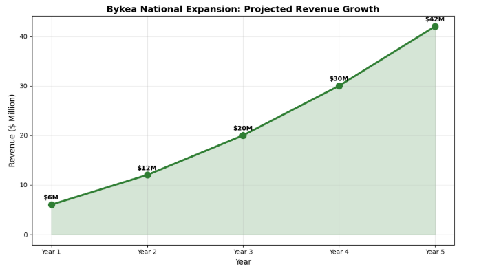
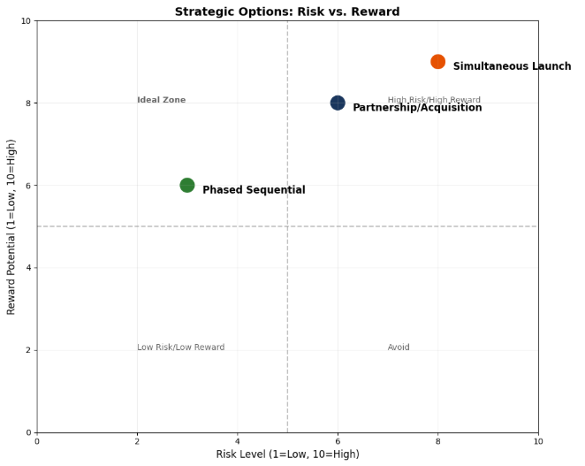
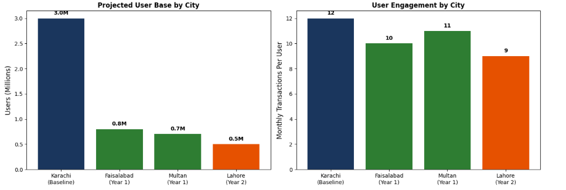

Executive Summary
Bykea, a Karachi‑based mobility and logistics startup founded in 2016 by Muneeb Maayr, has successfully established itself as a dominant player in Karachi's transport sector with over 3 million users. The core issue is now scaling from regional dominance in Karachi to a sustainable national presence across Pakistan's major cities including Lahore, Islamabad, Faisalabad, and Multan. We recommend a phased national expansion strategy combining targeted city entry sequencing, product localization, strategic partnerships, and controlled marketing investment. This approach is projected to expand Bykea's user base from 3 million to 8 million nationally, increase monthly transactions by 150%, and achieve profitability at the national level within 24 months.
Situation Analysis & Problem Definition
Company Background
Bykea began as a bike‑hailing service addressing Karachi's chronic traffic congestion and public transport gaps. The platform evolved to include parcel delivery, payments, and other daily services, becoming a super‑app for Karachi's middle and lower‑middle class. With 3 million users and 50,000+ registered riders, Bykea dominates Karachi's informal transport economy.
Market Conditions
Pakistan's urban transport and logistics market presents significant opportunity:
| Metric | Value |
|---|---|
| Population (total) | 240+ million |
| Urban population | 75+ million |
| Smartphone penetration | 40% and growing |
| Daily transport demand (major cities) | 50+ million trips |
| Digital payments users | 15+ million (JazzCash, Easypaisa) |
Target Cities Assessment
| City | Population | Transport Gap | Competition | Ease of Entry |
|---|---|---|---|---|
| Lahore | 13 million | High | Moderate (Careem, Uber, Indrive) | Medium |
| Islamabad | 2 million | Medium | High (ride‑hailing saturated) | High |
| Faisalabad | 3.5 million | High | Low | Low |
| Multan | 2 million | High | Low | Low |
| Rawalpindi | 2.5 million | Medium | Medium | Medium |
| Peshawar | 2 million | High | Low | Medium |
Problem Definition
Bykea faces three interconnected challenges in scaling nationally:
- Market Heterogeneity: Each Pakistani city has unique transport patterns, payment preferences, and competitive landscapes. Karachi's success formula cannot be simply replicated. Lahore has different traffic patterns and stronger competition from international players. Smaller cities like Faisalabad have different economics and user behaviors.
- Operational Complexity: Expanding to multiple cities simultaneously requires recruiting and training thousands of new riders, establishing local operations teams, managing city‑specific regulatory requirements, and building brand awareness from zero in each market.
- Capital Constraints: Bykea has raised approximately $15 million to date. Competing with well‑funded international players (Careem, Uber, InDrive) requires disciplined capital allocation. A failed national expansion could drain resources and damage the core Karachi business.
Root Cause Analysis
The fundamental challenge is how to replicate Bykea's Karachi success formula across diverse Pakistani cities while maintaining operational quality, unit economics, and company culture—all with limited capital against better‑funded international competitors.
Strategic Options & Evaluation
| Option | Description | Feasibility | Impact | Cost | Risk |
|---|---|---|---|---|---|
| A) Simultaneous Multi‑City Launch | Enter Lahore, Islamabad, Faisalabad, and Multan simultaneously | Medium | High | High | High |
| B) Phased Sequential Expansion | Enter one city at a time, learn, then move to next | High | Medium | Medium | Low |
| C) Partnership/Acquisition Model | Partner with or acquire regional transport players | Low | High | High | Medium |
Option A: Simultaneous Multi‑City Launch
Description: Launch operations in all target cities within 6 months. Deploy centralized marketing campaigns, national rider recruitment drives, and simultaneous brand building.
Pros: Rapid national footprint establishment, first‑mover advantage in underserved cities, national brand visibility, economies of scale in marketing.
Cons: Massive capital requirement ($8-10 million), operations team stretched thin, inability to learn and adapt per city, high risk of coordinated failure.
Feasibility: Medium | Impact: High | Cost: High ($8-10M) | Risk: High
Option B: Phased Sequential Expansion
Description: Enter one city, achieve operational stability and positive unit economics, then expand to the next. Learnings from each city inform the next launch.
Pros: Lower capital requirement ($3-4 million total), ability to refine operations per city, preserves company focus and culture, lessons learned transfer to subsequent cities, can pause if market conditions change.
Cons: Slower national coverage, competitors may enter target cities first, missed opportunities in multiple markets.
Feasibility: High | Impact: Medium | Cost: Medium ($3-4M) | Risk: Low
Option C: Partnership/Acquisition Model
Description: Identify and partner with or acquire existing transport platforms in target cities. Integrate their rider networks and user bases into Bykea.
Pros: Instant market presence, eliminates local competitors, acquires local talent and knowledge, faster path to scale.
Cons: High capital requirement, integration complexity, cultural and operational friction, limited acquisition targets available.
Feasibility: Low | Impact: High | Cost: High ($6-8M) | Risk: Medium
Risk vs. Reward 2×2 Grid

Interpretation: Phased sequential expansion (Option B) falls in the ideal low‑risk, medium‑reward quadrant, making it the most balanced choice.
Option Evaluation Matrix
| Criteria | Weight | Option A | Option B | Option C |
|---|---|---|---|---|
| Strategic Alignment | 25% | 8 (2.00) | 9 (2.25) | 7 (1.75) |
| Financial Viability | 25% | 4 (1.00) | 9 (2.25) | 5 (1.25) |
| Execution Feasibility | 20% | 5 (1.00) | 9 (1.80) | 4 (0.80) |
| Risk Profile | 15% | 3 (0.45) | 8 (1.20) | 5 (0.75) |
| Speed to Market | 10% | 9 (0.90) | 5 (0.50) | 8 (0.80) |
| Learning & Adaptability | 5% | 4 (0.20) | 9 (0.45) | 5 (0.25) |
| Total Score | 100% | 5.55 | 8.45 | 5.60 |
Recommended Option
Option B: Phased Sequential Expansion scores highest at 8.45, making it the clear strategic choice. This approach aligns with Bykea's bootstrapped DNA, preserves capital, and allows for operational learning across diverse Pakistani markets.
Recommended Roadmap
City Selection Rationale
| Sequence | City | Rationale | Timeline |
|---|---|---|---|
| 1 | Faisalabad | Large population, minimal competition, high transport gap | Months 1-9 |
| 2 | Multan | Similar profile to Faisalabad, geographic proximity | Months 10-18 |
| 3 | Lahore | Largest market, but competitive; enter after operational maturity | Months 19-30 |
| 4 | Rawalpindi/Islamabad | Twin cities with medium competition | Months 31-36 |
| 5 | Peshawar | Frontier market with unique dynamics | Months 37-42 |
Phase 1: Faisalabad Launch (Months 1-9)
Timeline Breakdown
- Months 1-3 (Preparation & Setup): Conduct detailed market research; identify key transport corridors; recruit local operations manager; establish local office; develop relationships with fuel stations and repair shops; navigate local regulatory requirements.
- Months 4-6 (Rider Recruitment & Training): Launch recruitment campaign targeting 2,000 riders; implement background verification; conduct training on app usage, customer service, safety; distribute branded merchandise; establish payment and incentive structure.
- Months 7-9 (Soft Launch & Optimization): Launch with 500 riders in selected zones; monitor unit economics; gather user feedback; adjust pricing; achieve 10,000 weekly active users.
Responsibilities
| Role | Responsibility |
|---|---|
| National Expansion Lead | Overall oversight, resource allocation |
| Faisalabad City Manager | Local operations, team building, partnerships |
| Product Team | City‑specific app features, localization |
| Marketing Team | Local awareness campaigns, rider recruitment |
| Finance | Budget management, unit economics tracking |
Milestones
| Milestone | Target Date | Success Criteria |
|---|---|---|
| Market research complete | Month 3 | Comprehensive city report |
| Operations team hired | Month 3 | City manager + 3 staff |
| 1,000 riders recruited | Month 5 | Verified and trained |
| Soft launch | Month 7 | 500 active riders |
| 10,000 weekly users | Month 9 | Achieved |
| Positive unit economics | Month 9 | Per‑ride profit > 0 |
Phase 2: Multan Expansion (Months 10-18)
- Months 10-12 (Preparation): Apply Faisalabad learnings; transfer operations playbook; recruit Multan city manager; establish local presence.
- Months 13-15 (Recruitment & Training): Accelerated rider recruitment using proven methods; leverage Faisalabad success stories.
- Months 16-18 (Launch & Optimization): Launch with 1,000 riders; achieve 15,000 weekly users.
| Milestone | Target Date | Success Criteria |
|---|---|---|
| Operations team hired | Month 11 | City manager + staff |
| 1,500 riders recruited | Month 15 | Verified and trained |
| Launch | Month 16 | 1,000 active riders |
| 15,000 weekly users | Month 18 | Achieved |
Phase 3: Lahore Entry (Months 19-30)
- Months 19-24 (Competitive Analysis & Preparation): Deep‑dive competitive analysis of Careem, Uber, InDrive; identify gaps; develop Lahore‑specific value proposition; build leadership team with Lahore experience.
- Months 25-27 (Strategic Partnerships): Partner with Lahore‑based businesses for rider incentives; explore university partnerships; develop targeted marketing campaigns.
- Months 28-30 (Launch with Differentiation): Launch with 2,000 riders focusing on underserved areas; emphasize affordability; target 25,000 weekly users within 3 months.
| Milestone | Target Date | Success Criteria |
|---|---|---|
| Competitive analysis complete | Month 22 | Comprehensive report |
| Partnerships secured | Month 27 | 5+ strategic partners |
| Launch | Month 28 | 2,000 riders |
| 25,000 weekly users | Month 30 | Achieved |
Phase 4: Rawalpindi/Islamabad (Months 31-36)
- Months 31-33 (Preparation): Study twin cities' dynamics; prepare for higher regulatory scrutiny (capital territory); build relationships with local authorities.
- Months 34-36 (Launch): Launch with 1,500 riders; target 20,000 weekly users.
| Milestone | Target Date | Success Criteria |
|---|---|---|
| Regulatory approvals | Month 33 | All permits secured |
| Launch | Month 34 | 1,500 riders |
| 20,000 weekly users | Month 36 | Achieved |
Phase 5: Peshawar (Months 37-42)
- Months 37-39 (Market Assessment): Conduct detailed security and operational assessment; build relationships with local stakeholders; adapt model for frontier market dynamics.
- Months 40-42 (Launch): Cautious launch with 800 riders; focus on safer areas initially; target 10,000 weekly users.
| Milestone | Target Date | Success Criteria |
|---|---|---|
| Security assessment | Month 38 | Clear operational protocol |
| Local partnerships | Month 39 | Key stakeholder relationships |
| Launch | Month 40 | 800 riders |
| 10,000 weekly users | Month 42 | Achieved |
Resource Allocation Across Phases
| Phase | Capital Required | Tech Resources | Ops Resources | Marketing Budget |
|---|---|---|---|---|
| Phase 1 (Faisalabad) | $1.2M | 3 engineers | 5 ops staff | $200K |
| Phase 2 (Multan) | $800K | 2 engineers | 4 ops staff | $150K |
| Phase 3 (Lahore) | $1.5M | 4 engineers | 8 ops staff | $400K |
| Phase 4 (Islamabad) | $900K | 2 engineers | 5 ops staff | $200K |
| Phase 5 (Peshawar) | $600K | 2 engineers | 4 ops staff | $100K |
| Total | $5.0M | 13 engineers | 26 ops staff | $1.05M |
Risk Mitigation & Implementation KPIs
Major Risks and Mitigation Strategies
| Risk | Mitigation Strategies |
|---|---|
| Rider Recruitment Challenges Inability to recruit and retain sufficient quality riders | City‑specific recruitment campaigns; referral bonuses; partner with local motorcycle rental schemes; clear career progression paths. |
| Competitive Response Incumbents may counter with price wars | Focus on underserved areas and routes; emphasize daily commute; maintain lean cost structure; build loyalty through reliable service. |
| Regulatory Hurdles Different transport regulations per city | Hire local regulatory consultants; engage authorities early; build compliance into operations; join local chambers of commerce. |
| Unit Economics Deterioration New cities may have different economics | Rigorous pre‑launch economic modeling; start with limited zones; dynamic pricing; weekly unit economics reviews. |
| Brand Dilution Rapid expansion may dilute brand identity | Maintain consistent brand guidelines; empower city managers to adapt messaging; regular brand health tracking; central quality assurance. |
| Technology Scalability Platform must handle 3‑5x transaction volume | Cloud infrastructure with auto‑scaling; load testing before each launch; dedicated engineering team; real‑time monitoring. |
| Capital Runway Expansion costs may exceed projections | Conservative budgeting with 20% contingency; milestone‑based funding; achieve positive unit economics before next phase; explore strategic partnerships. |
Key Performance Indicators (KPIs)
National Level KPIs
| KPI | Measurement Frequency | Year 1 Target | Year 2 Target | Year 3 Target |
|---|---|---|---|---|
| Total Users (M) | Monthly | 4.0 | 5.5 | 8.0 |
| Monthly Active Users (M) | Monthly | 1.2 | 1.8 | 2.8 |
| Monthly Transactions (M) | Monthly | 3.5 | 5.5 | 9.0 |
| National Revenue ($M) | Quarterly | 6 | 12 | 20 |
| Gross Margin (%) | Quarterly | 12% | 15% | 18% |
City‑Level KPIs (Per City)
Launch Phase (Months 1-3)
| KPI | Target | Measurement |
|---|---|---|
| Riders recruited | 500-1,000 | Weekly |
| User acquisition cost | < $3 | Weekly |
| Weekly active users | 5,000 | Weekly |
| Completion rate | > 85% | Daily |
Growth Phase (Months 4-9)
| KPI | Target | Measurement |
|---|---|---|
| Riders | 1,500-2,500 | Weekly |
| Weekly active users | 15,000 | Weekly |
| Transactions per active user | > 8/month | Monthly |
| Customer satisfaction | > 4.2/5 | Monthly |
| Rider retention (90‑day) | > 70% | Quarterly |
Maturity Phase (Months 10+)
| KPI | Target | Measurement |
|---|---|---|
| Market share | > 30% | Quarterly |
| Contribution margin | > 15% | Monthly |
| Brand awareness | > 60% | Bi‑annual |

Financial Impact & Conclusion
National Revenue Forecast (3 Years)
| Metric | Year 1 | Year 2 | Year 3 |
|---|---|---|---|
| Cities Operating | 2 (Faisalabad, Multan) | 3 (+Lahore) | 5 (+Islamabad, Peshawar) |
| Total Users (M) | 4.0 | 5.5 | 8.0 |
| Monthly Transactions (M) | 3.5 | 5.5 | 9.0 |
| Average Transaction Value | $1.20 | $1.25 | $1.30 |
| Annual Revenue ($M) | 6.0 | 12.0 | 20.0 |
| Revenue Growth | - | 100% | 67% |
Cost Structure (Year 3 Projection)
| Cost Category | Amount ($M) | Percentage |
|---|---|---|
| Rider Payments | 11.0 | 55% |
| Technology Infrastructure | 2.0 | 10% |
| Marketing & Sales | 2.5 | 12.5% |
| City Operations | 2.0 | 10% |
| Central G&A | 1.5 | 7.5% |
| Total Costs | 19.0 | 95% |
| Gross Profit | 1.0 | 5% |
| EBITDA | 1.0 | 5% |
Note: Margins improve over time as cities mature. Year 1 margins negative, Year 2 break‑even, Year 5 target 15-20%.
Investment Requirements
| Phase | Capital Required | Cumulative |
|---|---|---|
| Phase 1 (Faisalabad) | $1.2M | $1.2M |
| Phase 2 (Multan) | $0.8M | $2.0M |
| Phase 3 (Lahore) | $1.5M | $3.5M |
| Phase 4 (Islamabad) | $0.9M | $4.4M |
| Phase 5 (Peshawar) | $0.6M | $5.0M |
| Contingency (20%) | $1.0M | $6.0M |
| Total | $6.0M | $6.0M |
ROI Analysis
| Metric | Value |
|---|---|
| Total Investment | $6.0M |
| Year 3 Revenue | $20.0M |
| Year 3 Gross Profit | $1.0M |
| Cumulative Revenue (Years 1-3) | $38.0M |
| ROI by Year 3 | 16.7% |
| ROI by Year 5 (projected) | 45% |
| Payback Period | 4.2 years |

Long‑term Strategic Value
- National Platform Leadership: Bykea becomes Pakistan's first truly national mobility and logistics platform, serving everyday commuters across tier‑1 and tier‑2 cities.
- Network Effects: Riders can work across cities; brand recognition travels; national advertisers prefer single platform; data insights improve across markets.
- Diversification Platform: Enables inter‑city transport, nationwide parcel delivery, merchant services, and financial services leveraging transaction data.
- Defensive Moat: First‑mover advantage in tier‑2 cities creates defensible positions before international competitors enter.
- Talent Development: Distributed leadership team across Pakistan prepares for international expansion into similar emerging markets.
- Valuation Growth: Profitable national operation with 8M+ users and $20M+ revenue positions Bykea for Series C/D funding at $150-200M valuation, strategic acquisition, or IPO.
Conclusion
Bykea stands at a critical inflection point. Karachi dominance provides a strong foundation, but national expansion requires disciplined execution against significant challenges. The phased sequential expansion strategy recommended in this case study minimizes risk while building sustainable operations in each market.
Key success factors will include: rigorous city selection and sequencing, local empowerment with central support, conservative capital allocation, continuous learning and adaptation, and maintaining unit economics focus.
With $6 million in targeted investment and a 42‑month execution timeline, Bykea can transform from a Karachi‑centric startup to Pakistan's national mobility champion—serving millions of everyday users across the country while building long‑term sustainable value.